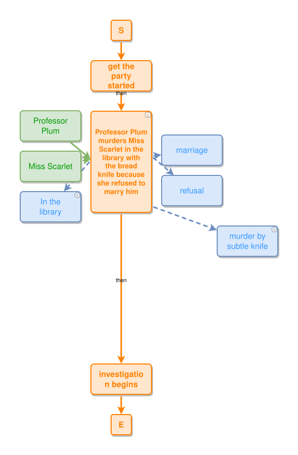
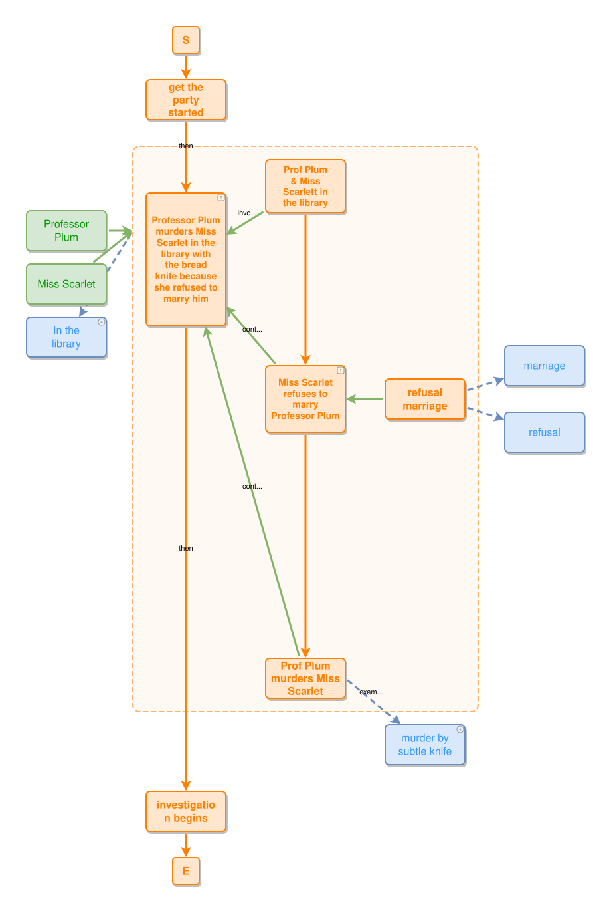
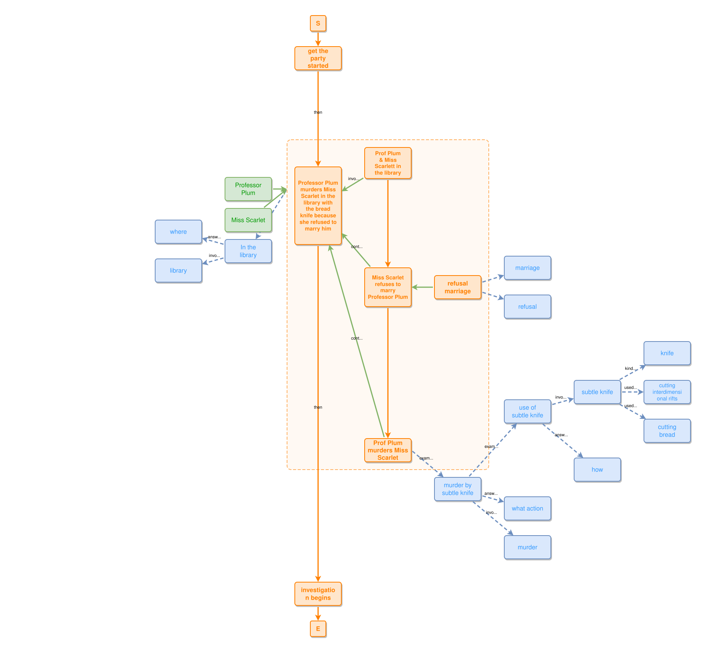

Pre-computed zoom states that expand composite events in place — so one ipm graph stays readable from a coarse overview all the way down to full detail.



scroll around → around + detail → detail (same murder-full graph)
An ipm story is nested: a coarse event hides a whole leads-to chain of sub-events, each of which hides more. Rather than redraw the graph at every step, the layout pre-computes a handful of zoom states and grows the diagram outward — expanding a chosen composite event into a container of its parts while everything around it holds its place.
An ipm graph in text form — the source story.
Compiles the graph into a .zoomlayout.json: a set of zoom states and node positions. Zoom inputs can be given explicitly or auto-detected from the graph.
Serves the states as pre-rendered SVG on an infinite canvas, with live node expansion via a small API.
around ↔ around + detail ↔ detail).+ badge) to pull in hidden neighbours on demand, or collapse them again.
A whole canvas can be baked into a single self-contained .zoom.html — every zoom state, node
position and pre-rendered SVG inlined, no server required. Open it straight from disk and the
scroll / click / expand interactions still work fully offline. Every model in the
SSTorytime corpus links its own
.zoom.html export.
The previews above are three of the pre-rendered states for the murder-full example. This is early sandbox tooling — the layout, state model, and canvas are all still moving. Expect rough edges.